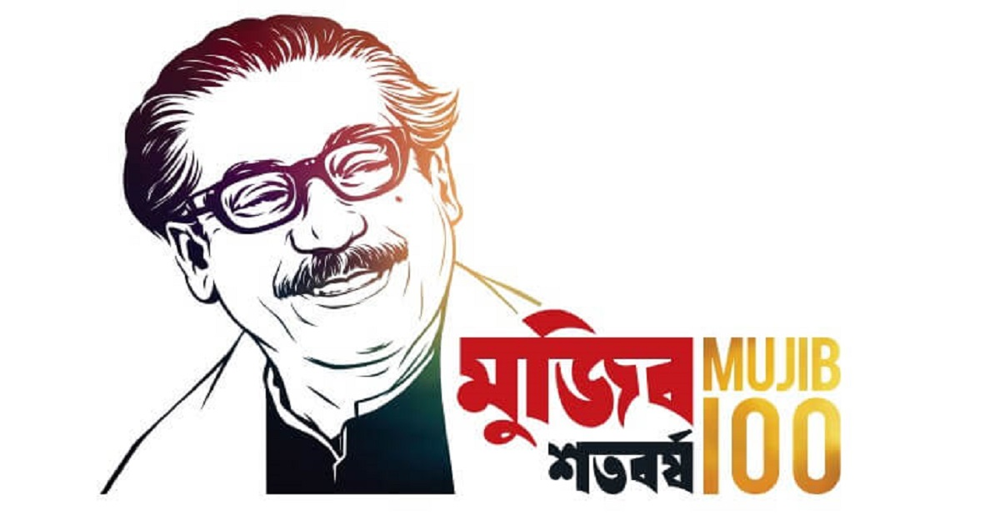
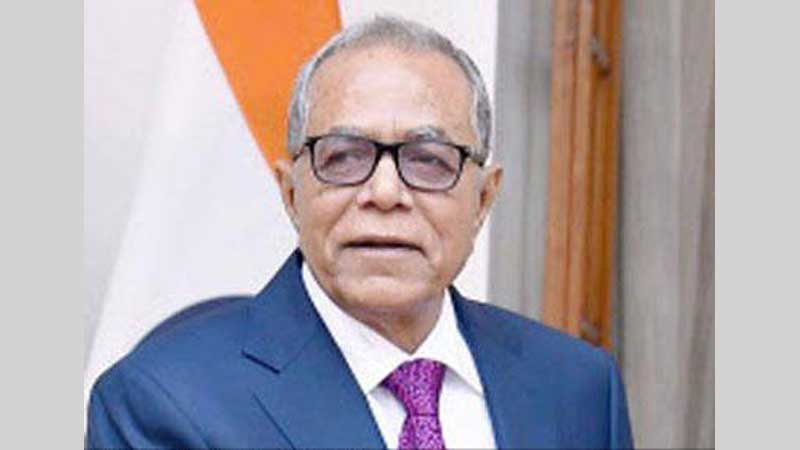

Father Of Nation
Rahman, Bangabandhu Sheikh Mujibur (1920-1975) Father of the nation and first president of Bangladesh (26 March 1971 to 11 January 1972). Sheikh Mujibur Rahman was born on 17 March 1920 in the village Tungipara under Gopalganj subdivision in the district of Faridpur. His father Sheikh Lutfar Rahman was a serestadar in the civil court of Gopalganj. Mujib, the third among six brothers and sisters, had his primary education in the local Gimadanga School. His early education suffered for about four years due to eye problems. He passed his Matriculation from Gopalganj Missionary School in 1942, Intermediate of Arts from Calcutta Islamia College in 1944 and BA from the same college in 1947.
Bangabandhu Sheikh Mujibur Rahman
Mujib showed the potential of leadership since his school life. While a student of Gopalganj Missionary School, AK Fazlul Huq, the then Chief Minister of Bengal, came to visit the school (1938). The young Mujib is said to have organized an agitation in order to impress the chief minister about the depressed situation of the region. While a student in Islamia College he was elected general secretary of the College Students Union in 1946. He was an activist of the Bengal Provincial Muslim League and a member of the All India Muslim League Council from 1943 onwards. In politics he had been a fervent follower of hs suhrawardy.
During the general elections of 1946, Sheikh Mujib was deputed by the Muslim League to work for the party candidates in the Faridpur district. After partition (1947), he got himself admitted into the University of Dhaka to study law but was unable to complete it, because he was expelled from the University in early 1949 on the charge of 'inciting the fourth-class employees' in their agitation against the University authority's indifference towards their legitimate demands.
Sheikh Mujibur Rahman was one of the principal organisers behind the formation of the East Pakistan Muslim Students League (1948). In fact, Sheikh Mujib's active political career began with his election to one of the three posts of joint secretaries of the newly established East Pakistan Awami Muslim League (1949) while interned in jail. The other two joint secretaries were Khondakar Mostaq Ahmad and AK Rafiqul Hussain. In 1953, Sheikh Mujib was elected general secretary of the East Pakistan Awami Muslim League, a post that he held until 1966 when he became president of the party. It was due to Mujib's initiative that in 1955 the word 'Muslim' was dropped from the name of the party to make it sound secular. It is indicative of his secularist attitude to politics that he developed after 1947.
To give full time to the organizational affairs of the Awami League, Sheikh Mujibur Rahman resigned from the cabinet of ataur rahman khan (1956-58) after serving for only nine months. During the time of general Ayub Khan, Mujib had the nerve to revive the Awami League in 1964, though his political guru, Suhrawardy, was in favour of keeping political parties defunct and work under the political amalgam called National Democratic Front for the restoration of constitutional rule in Pakistan. Mujib, after all, was already quite disillusioned about the concept of Pakistan. The impression that he got as a member of Pakistan's Second Constituent Assembly-cum-Legislature (1955-1956) and later as a member of Pakistan National Assembly (1956-1958) was that the attitude of West Pakistani leaders to East Pakistan was not one of equality and fraternity.
Sheikh Mujib was one of the first among the language movement detainees (11 March 1948). His address on 21 September 1955 in the Pakistan Constituent Assembly on the question of Bangla language is noteworthy. Claiming the right to speak in his mother tongue, Sheikh Mujibur Rahman said:
'We want to speak in Bengali here, whether we know any other language or not it matters little for us. If we feel that we can express ourselves in Bengali we will speak always in Bengali even though we can speak in English also. If that is not allowed, we will leave the House, but Bengali should be allowed in this house; that is our stand.'
Click here

Precident of our country
Mr. Md. Abdul Hamid was born on 1 January, 1944 in Kamalpur of Mithamoin Upazila under Kishoregonj district. His father’s name is Late Hazi Md. Tayeb Uddin and mother’s name is Late Tomiza Khatun.
Mr. Md. Abdul Hamid passed his Matriculation from Nikli G.C. High School and both I.A and B.A from Gurudayal College of Kishoregonj. He obtained Bachelor of Law degree from Central Law College under Dhaka University. Afterwards, he started his profession as a Lawyer.
Mr. Md. Abdul Hamid joined Chhatra League in 1959 and thereby his political career began. While studying in the college, he took leading part in anti-Ayub Movement in 1961. He was imprisoned by the then Pakistan Government in 1962 for his active participation in the student movement and opposing Hamoodur Rahman Education Commission Report. In 1962-63, he was elected General Secretary of Student Union in Gurudayal College of Kishoregonj and in 1965-66 the Vice-President of the same student union. Mr Hamid was the Founder President of Chhatra League of Kishoregonj Sub-division Unit in 1964 and also elected the Vice-President of Chhatra League of Mymensingh District Unit in 1966-67. He was again imprisoned in 1968 for leading student movement. Towards the end of 1969, he joined Awami League.
In 1971, on being instructed by Bangabandhu Sheikh Mujibur Rahman, he started the movement in Kishoregonj amid tumultuous protest against Pakistani regime to create public opinion in favour of independence. In the wake of movement, he hoisted the flag of independent Bangladesh inscribed with the map in a huge student gathering at Rothkhala field in Kishoregonj on March17, 1971 in which thousands of students and people participated. On receiving the historic proclamation of the Father of the Nation Bangabandhu for independence through a telegraphic message in the morning of 26 March in 1971, he instantly joined the Liberation War. With the cooperation of Bangalee Army officers in the early part of April 1971, Mr. Hamid procured approximately tk. 11 Crore and 78 lac from Kishoregonj, Bhairab and Bazitpur branches of National Bank of Pakistan and deposited the whole amount safely in the National Bank of Pakistan at its Brahmanbaria Branch considering that as a safe place of custody at that time for using it for the War of Liberation.
Click here
Priinister of our country
SHEIKH HASINA, Prime Minister of Bangladesh, was born on 28 September, 1947 at Tungipara under Gopalganj district. She is the eldest of five children of the Father of the Nation Bangabandhu Sheikh Mujibur Rahman, the founder of independent Bangladesh.
She graduated from the University of Dhaka in 1973. She was elected Vice President of the Students Union of Government Intermediate Girl’s College. She was a member of the students League Unit of Dhaka University and Secretary of the Students League Unit of Rokeya Hall. She actively participated in all the mass movements since her student life.
Father of the Nation Bangabandhu Sheikh Mujibur Rahman along with the members of his family was martyred on the fateful night of 15 August 1975. Sheikh Hasina and her younger sister Sheikh Rehana were the only survivors as they were in West Germany at that time. Later she went to the United Kingdom from where she started her movement against the autocratic rule in 1980. Sheikh Hasina was unanimously elected President of Bangladesh Awami League in 1981 in her absence, while she was forced to live in exile in New Delhi. Ending six years in exile, she returned home finally on 17 May 1981.
In the parliamentary election held in 1986, she won three seats. She was elected Leader of the Opposition. She led the historic mass movement in 1990 and announced the constitutional formula for peaceful transfer of power through Articles 51 and 56 of the Constitution.
Following the election of 1991 Sheikh Hasina became Leader of the Opposition in the country’s Fifth Parliament, She steered all the political parties in the parliament towards changing the Presidential system into the Parliamentary one.
Sheikh Hasina created awareness among the people and waged a struggle for Non-party Caretaker Government to ensure free and fair polls. Her movement reached the peak after a non-cooperation movement in March 1996 and the provision for Non-party Caretaker Government was incorporated in the Constitution.
At the call of Sheikh Hasina a large number of people of all walks of life expressed solidarity with the movement at the ‘Janatar Mancha’. In the Parliamentary election held on 12 June 1996, Bangladesh Awami League emerged as the majority party and she assumed the office of the Prime Minister of Bangladesh on 23 June 1996.
After becoming the Prime Minister, Sheikh Hasina adopted a number of pragmatic policies for overall development of the nation including poverty alleviation. During the last four years her government achieved laudable success including signing of the historic 30 year Ganges Water Sharing Treaty with India, signing of historic peace Accord on Chittagong Hill Tracts and inauguration of the Bangabandhu Bridge on the river Jamuna.
Sheikh Hasina was conferred Degree of Doctor of Law by the Boston University of the USA on 6 February 1997 and Honorary Doctor of Law by the Waseda University of Japan on 4 July 1997. She was also conferred the Honorary Doctorate of Philosophy in Liberal Arts by University of Abertay Dundee of the United Kingdom on 25 October, 1997. She was conferred Honorary Degree of Desikottama (Doctor of Literature, honoris causa) by Visva-Bharati University of West Bengal, India on 28 January 1999. She was also conferred the degree of Doctor of Laws, honoris causa, on the ground of her distinguished creative contributions in the service of society by the Australian National University on 20 October 1999. Dhaka University conferred Honorary ‘Doctor of Laws’ degree to Sheikh Hasina on 18 December, 1999 for her outstanding contribution towards peace and democracy. The World famous Catholic University of Brussels, Belgium conferred Honorary Doctorate degree (Doctor Honoris Causa) on Sheikh Hasina on 04 February, 2000 for her decisive role in establishing democracy, protecting human rights and peace. Sheikh Hasina has been conferred Honorary Doctor of Humane Letters by the Bridgeport University, USA on 5 September, 2000.
Sheikh Hasina has been awarded UNESCO’s Houphouet-Boigny Peace Prize for 1998 for her remarkable contribution to bringing peace through ending the 25 years of conflict in Chittagong Hill Tracts with political courage and statesmanship.
Prime Minister Sheikh Hasina received prestigious Pearl S. Buck Award ’99 on 9 April 2000 in recognition of her vision, courage, achievements in political, economic and humanitarian fields by Randolph Macon Women’s College of USA. The UN Food and Agriculture Organization (FAO) has been awarded the prestigious CERES’ medal to Prime Minister Sheikh Hasina in recognition to her fight against hunger on 02 August, 1999. The All India Peace Council awarded her ‘Mother Teresa Award’ in 1998. The Mahatma M K Gandhi Foundation of Oslo, Norway awarded Sheikh Hasina ‘M K Gandhi Award’ for 1998 for her contribution towards promotion of communal understanding, non violent religions harmony and growth of democracy at the level of grassroots in Bangladesh. Sheikh Hasina was named Paul Haris Fellow by the Rotary Foundation of Rotary International. She was also given Medal of Distinction in 1996-97 and 1998-99 and Head of State Medal in 1996-97 by the International Association of Lions Clubs.
She has authored several books including “Why Are They Street Children”, “The Origin of Autocracy”, ‘Miles to Go”, “Elimination of Poverty and Some Thoughts”, “People and Democracy”, “My Dream My Struggle” and “Development for the Masses.” She performed holy Hajj and Umrah several times.
Sheikh Hasina is the Chairperson of “The Father of the Nation Bangabandhu Sheikh Mujibur Rahman Memorial Trust”. She has been helping a lot of poor boys and girls for their education.
Prime Minister Sheikh Hasina, throughout her life has been a strong proponent of peace, freedom and democracy. From an early age, inspired by the lofty ideals and love for the people of her father, Bangabandhu Sheikh Mujibur Rahman, the liberator of Bangladesh, she developed a strong sense of identity for the common people. She always spoke out against oppression and violation of human rights. This commitment has hardened over the years, particularly when her parents, brothers and scores of relatives were brutally assassinated by the misguided members of the military in 1975 soon after the independence of Bangladesh.
Since that time her resolve for democracy and development for the teeming millions of Bangladesh has become firmly entrenched. She struggled for the return of democracy in Bangladesh and fought valiantly for its establishment in the country in every possible manner. She was committed to making Parliament the centre of all national activities.
In 1996, the people of Bangladesh gave her a strong mandate as the Prime Minister of the country. Despite serious resource and constraints and recurrent natural calamity as well as widespread poverty, Prime Minister Sheikh Hasina, during the first two years of her government, has lived up to her unswerving commitment to the cause of peace, democracy, development and human rights.
Her first act of peace within months of her assumption of office was the initiative for resolution of the long-standing water-sharing dispute with India through a 30-years treaty. This put an end to a very complex regional dispute.
Her visionary idea of a business summit among the political and private sector leaders of Bangladesh, India and Pakistan has added a new chapter in the history of South Asia.
Her dedicated leadership also made possible a peace agreement in the Chittagong Hill Tracts, thereby solving the 23-year old insurgency in the Hill districts of Bangladesh. This peace accord brought an area inhabited by nearly 5 million people out of violence and into a time of peace and development. Though the international media has not given much prominence to this accord, it is uniquely remarkable because the peace accord benefited such a large number of people and the whole area has been brought under development programs following the complete surrender of arms by the insurgents.
Her quest for peace has taken her to India and Pakistan to talk to the leaders of these two countries soon after the nuclear test urging reduction of tension in the region.
Prime Minister Hasina has been a strong advocate for the Culture of Peace at global, regional and national levels. In many major conferences, she espoused the concept of the Culture of Peace, most recently in South Africa at the 12th Summit of the Non-Aligned Movement (NAM) which has a membership of 114 countries. Her initiative has resulted in the first-ever resolution by the Plenary of the United Nations General Assembly on the Culture of Peace. She also provided leadership for the declaration by the UN of the period 2001 to 2010 as the International Decade for Culture of Peace and Non-Violence for the Children of the World.
Prime Minister Hasina’s determination for the eradication of poverty, in particular through wide-ranging microcredit programmes, has been recognized world-wide. Her co-chairpersonship of the Microcredit Summit in February 1997 which resolved to bring 100 million families of the world out of poverty by 2005 focused world attention to her strong commitment to the eradication of poverty and enlistment of the poorest of the poor. She has been a champion of microcredit by spreading the message in major international forums. Her leadership led to the adoption for the first time by UN General Assembly a far-reaching resolution on the role of microcredit in the eradication of poverty.
Along with poverty eradication, she has focused on the empowerment of women and has successfully completed legislation to ensure adequate representation of women in the local government bodies, leading to the election of more than 14,000 women to these bodies in 1997. She has taken major initiatives to stop violence against women and children. She has also provided leadership in the field of education, particularly for the education of girls in her own country as well as advocating it for global support. Her government has greatly enhanced budgetary allocation for primary education focusing on girls’ education.
To improve the quality of life of the people of Bangladesh, Prime Minister Sheikh Hasina has particularly focused on human development, paying special attention to healthcare, family planning, nutrition, women’s rights and survival and development of children. At the UN and other forums, she has been a major voice in support of the cause of children and their rights.
Prime Minister Sheikh Hasina has, all along her life, defended human rights in every possible way. Her active promotion of the rights of women and children has drawn appreciation by both government and NGOs as well as international organizations. She has promoted the right to development as having centrality in the human rights regime. At the NAM Summit in South Africa in 1998, her proposal for a Convention on the Right to Development received welcoming endorsement of the Heads of State and Government. She initiated the establishment of a National Human Rights Commission and the office of Ombudsperson as well as Bangladesh’s recent accession to six major human rights instruments including the International Covenant on Economic, Social and Cultural Rights.
Her keen interest resulted in the signature by Bangladesh of the Statute for the International Criminal Court (ICC) and ratification of the Landmines Treaty, being the first country in South Asia to do so.
Prime Minister Sheikh Hasina’s initiative resulted in the hosting of the first-ever conference of the Asian parliamentarians devoted to peace and cooperation in Dhaka in September 1999 which elected her as the first President of the Association of Asian Parliaments for peace established at the conference.
At present, as someone who has lost so much personally and has been a victim of oppression and denial of freedom, Prime Minister Sheikh Hasina stands out as a messenger of peace, democracy, development and human rights. Her leadership of the eighth largest country of the world manifests her concern for the people, seen again during the worst-ever floods in Bangladesh in 1998.
• Sheikh Hasina is the recipient of the UNESCO Houphouet-Boigny Peace Prize for 1998 for her role in bringing peace in the Chittagong Hill Tracts region of Bangladesh.
• Sheikh Hasina has been awarded the Mahatma Gandhi Award for 1998 (Oslo, Norway) for her contribution towards promotion of communal understanding, non-violence, religious harmony and growth of grassroots democracy in Bangladesh.
• She has been awarded 1999 CERES Medal for contribution to the agriculture development by the Food and Agriculture Organization of the United Nations, Rome.
• She is the winner of the 1999 Pearl S. Buck Award for “your vision, your courage and your achievements in political, economic and humanitarian spheres capture the spirit of the award and of the woman who inspired it.”
• She has been awarded honorary Doctor of Liberal Arts by the University of Alberta Dundee in the United Kingdom in October 1997.
• She has been conferred honorary Doctor of Laws by the Boston University in the United States and the Waseda University of Japan.
• She has been conferred the degree of Desikottama (Doctor of Literature) by the Visva-Bharati University, India founded by Nobel Laureate Rabindranath Tagore.
• She has been conferred honorary Doctor of Laws by the Australian National University in October 1999.
• Prime Minister Sheikh Hasina has been conferred honorary Doctor of Laws by Dhaka University in December 1999.
• She has been conferred honorary Doctor of Laws by the Catholic University of Brussels in February 2000.
• Prime Minister Sheikh Hasina has been conferred by the honorary Doctor of Humane Letters for her contribution to world peace and development by the University of Bridgeport, Connecticut in the United States on 5 September 2000
Under her leadership her party Bangladesh Awami League led grand alliance to win a landslide victory in the 9th Parliament Election on December 29, 2008 with 262 seats out of 299 in the National Parliament.
Sheikh Hasina took oath as Prime Minister of Bangladesh at a ceremony held at Banghabhaban on January 06, 2009.
Sheikh Hasina is married having one son and one daughter.
Click here
.jpg)
.jpg)